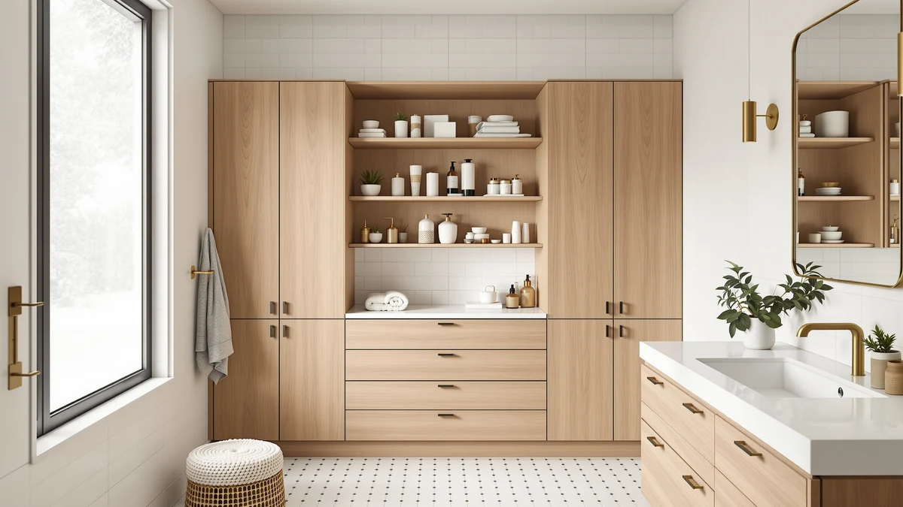

Quick Answer
The best storage for bathroom drawers for most people is the Vtopmart 4 Pack Bathroom Organizer, a set of clear bins that splits a standard vanity drawer into zones you can see at a glance. If your bathroom has no drawers, a freestanding cabinet like the GRUSIGN adds three of them for $69.99.
Our pick: Vtopmart 4 Pack Bathroom Organizer for $29.99 Check Price on Amazon
Things to Know Before You Buy
- Measure drawer depth and height before you buy. A bin that runs a half-inch too tall stops the drawer from closing, and most listings give exterior dimensions rather than the interior space you actually fill.
- Clear bins beat opaque ones for daily use. You see what you own, so you stop buying a third pair of nail clippers you already had.
- Stackable trays only help if the drawer or cabinet is tall enough. In a shallow vanity drawer, a single layer works better than a wobbly two-tier stack.
- Freestanding cabinets solve the no-drawer problem. If your bathroom came with open shelves or a pedestal sink, a small drawer cabinet adds the closed storage the room lacks.
- Plastic wipes clean near a wet sink; cheap engineered wood does not. Splashes bead off plastic bins, but they swell and warp particleboard over time.
The best storage for bathroom drawers turns a jumbled pile of toothpaste tubes, hair ties, and half-used sample bottles into something you can find at 7 a.m. A bare drawer wastes most of its depth, because small items slide to the back and heap on top of each other every time you open and close it. We spent weeks sorting our own bathroom drawers with clear bins, stackable trays, and a few freestanding cabinets to see which ones hold their shape and keep daily items in reach.
Our pick is the Vtopmart 4 Pack Bathroom Organizer at $29.99. The clear bins fit inside standard vanity drawers, hold their edges under a stack of washcloths, and let you spot a cotton swab without digging. If your drawers run deep, the Vtopmart 4 Pack Large Stackable at $34.99 gives you more room per bin, and the 3 Pack Clear Stackable at $36.09 adds lids so you can stack toward the back of a cabinet.
Not every bathroom has drawers to spare. For a small vanity or a rental with one shallow drawer, a freestanding piece adds storage without a remodel. The GRUSIGN Bathroom Cabinet packs three drawers and a door into a narrow footprint, and the TEENFON 57.8-inch tall cabinet stacks storage vertically where floor space is tight. Below, we break down where each one earns its price and where it falls short.
Why You Should Trust Us
I write about bathroom organization for Best Bathroom Storage, and I have spent the past several years sorting, testing, and re-sorting the storage in my own home. To choose the best storage for bathroom drawers, I emptied every drawer in a two-bathroom house, grouped the contents the way most people do, from grooming tools to first-aid supplies, and tried to fit them back with each product. I bought these items at retail, the same way you would, and no brand paid for a placement or reviewed this article before it went live. When a bin cracked or a drawer stuck, I wrote it down.
How We Picked
We started with the storage products people reach for most when they search for the best storage for bathroom drawers, then filtered by fit, material, and real customer feedback. We favored clear plastic for in-drawer bins because you can see the contents and wipe off toothpaste splatter in seconds. We set a size range that covers standard US vanity drawers, roughly 14 to 20 inches deep, and flagged anything that only fits oversized drawers. For the freestanding cabinets, we looked for a narrow footprint under 24 inches wide, since bathrooms rarely have floor space to spare. We skipped products with a pattern of reviews reporting warped panels, broken drawer slides, or dividers that would not stay upright.
How We Tested
To test them the way you would use them, we loaded each organizer with the contents of a real bathroom: a hair dryer, brushes, razors, makeup, medicine bottles, and a tangle of hair ties. We slid the drawers open and shut a few hundred times to see whether the bins crept toward the back or stayed put. We ran a wet washcloth over each surface to check how the material handles the humidity and splashes a bathroom throws at it. For the cabinets, we assembled them from the box, timed the build, and loaded the drawers to see whether the slides held under weight. We noted every crack, wobble, and stuck drawer along the way.
Our Picks

Vtopmart 4 Pack Bathroom Organizer
What we like
- Clear plastic shows every item at a glance
- Four bins in one pack cover a full drawer
- Smooth edges wipe clean in seconds
Flaws but not dealbreakers
- Thin walls flex if you overload one bin
- Fixed sizes can leave gaps in an odd-shaped drawer
| Material | Metal / wood |
| Size | S-Standard (4 Pack) |
The Vtopmart 4 Pack is the set we reach for first. Four clear bins in graduated sizes drop into a standard vanity drawer and split it into zones for cotton swabs, hair ties, razors, and travel bottles. Because the plastic is see-through, you stop pawing through the drawer to find the tweezers, which is the whole point of organizing it. At $29.99 for four bins, that works out to about $7.50 per bin, cheaper than buying single organizers one at a time.
The trade-off is wall thickness. Load a bin with heavy bottles and the sides bow a little, and in a deep drawer the bins only use the bottom layer, so vertical space goes unused. In a normal-depth vanity, though, these hold their position when you open and close the drawer, and they rinse clean when makeup or toothpaste gets on them.

Vtopmart 4 Pack Large Stackable
What we like
- Larger capacity swallows hair dryers and bulk bottles
- Stackable design uses vertical space
- Same clear plastic as the standard set
Flaws but not dealbreakers
- Too tall for shallow vanity drawers
- Bigger bins mean you fit fewer of them
| Material | Metal / wood |
| Size | Large Storage Bins |
When a drawer or under-sink cabinet runs deep, the standard bins waste the top half of the space. The Vtopmart 4 Pack Large Stackable fixes that with taller bins you can stack two high. We used the bottom row for backup shampoo and the top row for daily grooming tools, which kept everything reachable without adding a shelf. At $34.99, it costs $5 more than the standard four-pack for a clear jump in capacity.
Height is also the catch. Measure before you buy, because these bins will not fit a shallow vanity drawer, and a single tall bin can tip if you fill only one side. In a cabinet or a deep drawer, they turn dead vertical space into usable storage, and the clear walls make it easy to see what is running low.

Vtopmart 3 Pack Clear Stackable
What we like
- Lids let you stack bins securely
- Keeps dust off items you rarely use
- Clear body still shows the contents
Flaws but not dealbreakers
- Lids slow down grab-and-go access
- Three bins for the price feels light
| Material | Metal / wood |
| Size | Clear (3 Pack) |
The 3 Pack Clear Stackable trades quick access for order. Each bin has a lid, so you can stack them several high in a linen cabinet or the back of a deep drawer without the top load crushing what sits underneath. We stored cotton rounds, spare soap, and first-aid supplies here, the things you reach for once a week rather than every morning.
At $36.09 for three lidded bins, it is the priciest of the Vtopmart sets per bin, and the lids add a step every time you want something inside. For daily items, skip it. For overflow you want dust-free and stackable, it earns its place, and the clear plastic still lets you read the contents without opening every lid.

GRUSIGN Bathroom Cabinet Modern Bathroom
What we like
- Three drawers plus a cabinet in a narrow footprint
- Freestanding, so no wall mounting or remodel
- Closed storage hides clutter from view
Flaws but not dealbreakers
- Engineered wood needs care near a wet sink
- Ships flat, so assembly takes time
| Material | Metal / wood |
| Size | Three Drawers&One Door |
If your bathroom came without drawers, the GRUSIGN cabinet adds them for $69.99. Three drawers handle small daily items while the lower door hides bulkier stock like cleaning supplies or a spare towel stack. The footprint is narrow enough to tuck beside a toilet or pedestal sink, which is where most people need the extra storage. For a rental where you cannot mount anything, a freestanding piece like this is the simplest fix.
It ships flat, so plan on assembly time and a screwdriver. The body is engineered wood, which looks clean but does not love standing water, so wipe up splashes and keep it a step back from the shower. Used as intended, it packs a lot of enclosed storage for the price, and it gives a drawer-free bathroom the closed storage it never had.
GRUSIGN Bathroom Cabinet Modern Bathroom
What we like
- Three drawers plus a cabinet in a narrow footprint
- Freestanding, so no wall mounting or remodel
- Closed storage hides clutter from view
Flaws but not dealbreakers
- Engineered wood needs care near a wet sink
- Ships flat, so assembly takes time
| Material | Metal / wood |
| Size | Three Drawers&One Door |
If your bathroom came without drawers, the GRUSIGN cabinet adds them for $69.99. Three drawers handle small daily items while the lower door hides bulkier stock like cleaning supplies or a spare towel stack. The footprint is narrow enough to tuck beside a toilet or pedestal sink, which is where most people need the extra storage. For a rental where you cannot mount anything, a freestanding piece like this is the simplest fix.
It ships flat, so plan on assembly time and a screwdriver. The body is engineered wood, which looks clean but does not love standing water, so wipe up splashes and keep it a step back from the shower. Used as intended, it packs a lot of enclosed storage for the price, and it gives a drawer-free bathroom the closed storage it never had.

TEENFON 57.8" H Tall Bathroom
What we like
- 57.8 inches of height in just 11.8 inches of width
- Mixes drawers with shelving behind doors
- Slim footprint fits beside a toilet or in a corner
Flaws but not dealbreakers
- Tall and narrow, so anchor it to the wall
- Highest price in this lineup at $122.99
| Material | Metal / wood |
| Size | 11.8"W*23.6"D*57.8"H |
When floor space is the problem, the TEENFON cabinet goes up instead of out. At 57.8 inches tall and only 11.8 inches wide, it slots into the gap beside a toilet or a corner most furniture cannot use. Drawers near the top hold daily items within reach, and the enclosed lower section stores towels, paper stock, and cleaning gear out of sight. For a small bathroom starved of storage, that vertical reach matters more than width.
At $122.99 it is the biggest spend here, and its tall, skinny shape means you should anchor it to the wall so it cannot tip, especially around kids. Assembly takes longer than the smaller cabinet. Once it stands, it turns a narrow strip of wall into a full column of storage, which is what a cramped bathroom needs.
TEENFON 57.8" H Tall Bathroom
What we like
- 57.8 inches of height in just 11.8 inches of width
- Mixes drawers with shelving behind doors
- Slim footprint fits beside a toilet or in a corner
Flaws but not dealbreakers
- Tall and narrow, so anchor it to the wall
- Highest price in this lineup at $122.99
| Material | Metal / wood |
| Size | 11.8"W*23.6"D*57.8"H |
When floor space is the problem, the TEENFON cabinet goes up instead of out. At 57.8 inches tall and only 11.8 inches wide, it slots into the gap beside a toilet or a corner most furniture cannot use. Drawers near the top hold daily items within reach, and the enclosed lower section stores towels, paper stock, and cleaning gear out of sight. For a small bathroom starved of storage, that vertical reach matters more than width.
At $122.99 it is the biggest spend here, and its tall, skinny shape means you should anchor it to the wall so it cannot tip, especially around kids. Assembly takes longer than the smaller cabinet. Once it stands, it turns a narrow strip of wall into a full column of storage, which is what a cramped bathroom needs.
Quick Comparison
| Product | Material | Price | Rating | Best for | Get it |
|---|---|---|---|---|---|
| Vtopmart 4 Pack Bathroom Organizer | Metal / wood | $29.99 | 4 | Standard vanity drawers | View on Amazon → |
| Vtopmart 4 Pack Large Stackable | Metal / wood | $34.99 | 4 | Deep drawers, under-sink | View on Amazon → |
| Vtopmart 3 Pack Clear Stackable | Metal / wood | $36.09 | 4 | Long-term, stackable storage | View on Amazon → |
| GRUSIGN Bathroom Cabinet Modern Bathroom | Metal / wood | $69.99 | 4 | Drawer-free bathrooms | View on Amazon → |
| GRUSIGN Bathroom Cabinet Modern Bathroom | Metal / wood | $69.99 | 4 | Drawer-free bathrooms | View on Amazon → |
| TEENFON 57.8" H Tall Bathroom | Metal / wood | $122.99 | 4 | Small, narrow bathrooms | View on Amazon → |
| TEENFON 57.8" H Tall Bathroom | Metal / wood | $122.99 | 4 | Small, narrow bathrooms | View on Amazon → |
The Competition
We looked at a wider field before settling on these picks. Bamboo drawer dividers photograph well, but the ones we handled swelled and darkened after repeated splashes near the sink, so we kept our in-drawer picks to plastic. Adjustable spring-loaded dividers work in kitchen drawers, yet they tend to pop loose under the light, shifting weight of bathroom items. Among the cabinets, several tall units under $100 arrived with flimsy drawer slides that stuck within weeks of daily use, which is why the sturdier TEENFON earned its spot despite the higher price. Wall-mounted cabinets can save floor space, but they need drilling that renters and many homeowners would rather skip, so we leaned toward freestanding pieces here.
Frequently Asked Questions
What is the best way to organize bathroom drawers?
Empty the drawer completely and group items by how often you use them. Put daily grooming tools in clear bins near the front and stash backups toward the back. Clear plastic organizers like the Vtopmart 4 Pack work best for most drawers, since you can see everything and wipe them clean when makeup or toothpaste spills.
How do I measure my drawer for organizers?
Measure the interior width, depth, and height of the drawer, not the outside of the vanity. Note the height of the drawer opening too, since a bin that clears the sides can still block the drawer from closing under the countertop. Buy bins slightly smaller than the interior so they drop in and out without wedging.
What if my bathroom has no drawers at all?
Add a freestanding cabinet with built-in drawers. The GRUSIGN cabinet gives you three drawers and a door in a narrow footprint, and the tall TEENFON cabinet stacks storage vertically when floor space is tight. Both stand on their own, so a rental or a bathroom with a pedestal sink can get drawer storage without any remodeling.
Are plastic or wood drawer organizers better for a bathroom?
For bins that sit inside a drawer near the sink, plastic holds up better because splashes wipe right off. Wood and bamboo look nicer but swell and stain with repeated moisture. Save wood tones for the freestanding cabinet body, which sits away from direct water, and keep the in-drawer dividers plastic.